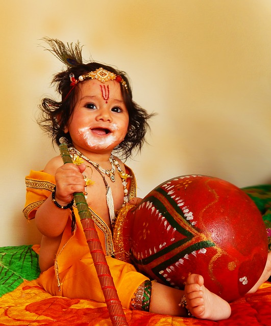
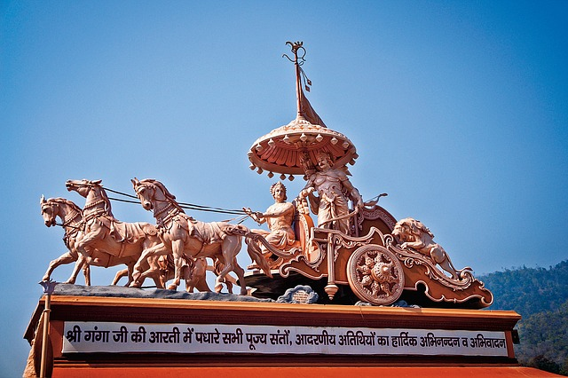

JANAMASHTMI
{kind=link}
Lord Vishnu is invoked in his human incarnation as Krishna on his birth anniversary in the festival of Janmashtami. The temples of Vrindavan witness an extravagant and colourful celebration on this occasion. Raslila is performed to recreate incidents from the life of Krishna and to commemorate his love for Radha. The image of the infant Krishna is bathed at midnight and is placed in a cradle. Devotional songs and dances mark the celebration of this festive occasion all over Northern India.
In Maharashtra, Janmashtami witnesses the exuberant enactment of the god's childhood endeavours to steal butter and curd from earthen pots beyond his reach. A matka or pot containing these is suspended high above the ground and groups of young men and children form human pyramids to try and reach the pot and eventually break it.
Janmashtami celebrates the birth of one of the most famous Gods of Hindu religion, Bhagwan Krishna, on the eighth day (Ashtami) in the month of Sravana or Savana. Lord Sri Krishna was born on the 'Rohini' nakshatram (star). It is generally celebrated in the month of August-September according to the Christian Calendar. Legend has it that Sri Krishna was born on a dark, stormy and windy night to end the rule and atrocities of his maternal uncle, Kansa.
Birth of Lord Krishna
Janmashtami is celebrated to welcome and enjoy Lord Krishna's birth. The birth of Lord Krishna took place when the various planets were in auspicious places. It is said that God chooses a particular time, as to when he will take birth as a human and the planetary systems are adjusted accordingly.
Auspicious Nakshatra (Constellation)
Around the time of Bhagwan Krishna's birth, Rohini Nakshatra was predominant as it is considered to be quite auspicious. This is so because it is under the supervision of Brahma, the creator of Universe. Sri Krishna was born in the month Of Sravana more than 5000 years ago.
Born in Dwapur Yug (Iron Age)
According to some scholars, Krishna was born on Wednesday,the eighth day of second fortnight in Sravana month in the year of Visvavasu around 3227 BC, also known as Dwapur Yug. July 19th 3228 BC to be more accurate. He lived for 125 years and disappeared on February 18th 3102 BC on the new moon night of Phalguna. His death was the onset of the current corrupt age known as Kaliyug.
Universal Happiness of all Forms of Life
From the time, Devki conceived Sri Krishna, she began to glow and exude divine light. The prison walls glowed with the aura of the new born infant. Atmosphere of peace and happiness prevailed all over, Forests were all green and full of trees with all kinds of beautiful flowers, rivers were all swollen due to joy, peacocks began to dance in sheer joy, people in all villages started being happy.
Objective of Krishna's Birth
The main objective of Lord Krishna's birth was to free Mother Earth from the wickedness of demons. Playing an important part in Mahabharata (legendary battle in Kurukshetra) and propagating the theory of bhakti and good karma were other important objectives.
Events Before The Birth of Sri Krishna
The people of Mathura were extremely unhappy with the wicked king Kansa who put his father, king Ugrasen in prison and declared himself the king of Mathura. It was to put an end to his evil ways and other demons that Lord Vishnu decided to take birth on Earth in human form. According to Akashvani (heavenly voice) at the wedding of his beloved sister Devki, Kansa got to know that the eighth child of his sister will take birth to kill him. So, in turn he rushed to kill his sister. Kansa gave up the idea of killing after being assured by Vasudev that he will handover all his children to him. He put them in Prison. Kansa killed all the six infants as soon as they were born. The seventh child (Balram) was saved due to divine intervention, when he was transferred from Devki's womb to that of Rohini's (other wife of Vasudev).
Events During the Birth of Lord Krishna
Lord Krishna was born in a prison cell in the captivity of King Kansa. He took birth in divine form with lotus like eyes,his palms bearing the signs of a lotus and discus. He had a swastika sign on his sole. Wearing a yellow colored silk cloth, adorned with precious diamond earrings and a crown made of emeralds. Soon after the birth, a chain of events astonished Vasudev,when he saw the gates of the cell flow open and all the guards fast asleep. He immediately thought of Nand ,his close friend in Gokul and decided to handover his child to him in order to save him from the clutch of Kansa.
River Yamuna Bows To The Feet of Sri Krishna
The night of birth was witnessed by heavy rains which led to River Yamuna being in floods. As soon as the feet of Lord immersed in the river, the flow became normal and Yamuna made way for the Lord. Sheshnag, the serpent formed an umbrella to save the new born baby from rain.
Exchange of the Babies
Vasudev kept his child next to fast asleep Yashoda and took the baby girl lying with him back to Mathura. The baby girl is believed to be the sister of Lord Vishnu.
Disappearance of The Divine Child
On hearing the news of birth of the eighth child of Devki and Vasudev, Kansa rushed to the prison-cell and lifted the baby girl to kill her despite pleadings from Devki. However, instead of hitting the stone, the child flew up in the air and announced that the annihilator of Kansa was born and in safe hands. Janmashtami in Vrindavan Krishna later gre in Gokul and finally killed his maternal uncle, King Kansa
Sri Krishna Janmashthami
Shri Krishna Janmashtami celebrates the birth of Shri Krishna, the incarnation of Lord Vishnu. Janmashtami is a festival which is celebrated by Hindus across the world with lot of jubilation and excitement. Dwarka, Mathura and Vrindavan are the places in India which attract the maximum visitors during the festival of Janmashtami. These places are the best destinations if you are in India to witness the amazing celebrations associated with Janmashtami. Festival of Janmashtami is also known as Gokulashtami or Krishnaashtami and is celebrated across the world with same fervour as is seen in India during this auspicious festival. Shri Krishna idols are bathed and decorated at midnight (The time on which Shri Krishna took birth) and many rituals are performed during the prayers offered to Shri Krishna. Another popular attraction during the festival of Janmashtami is the popular Dahi Handi event which is celebrated all across the state of Maharashtra. During this event human pyramids are formed with an objective of breaking the dahi handi (earthern pots filled with curd) which are tied high above the ground. This is a very popular event which is also televised across the nation and leaves everyone spellbound with excitement.
When is Janmashtami
Janmashtami comes every year on the eighth day in the Month of Shravana (August-September). According to Hindu scriptures, Sri Krishna was born in the ‘Rohini’ star. Janmashtami is celebrated for two days, the first day is called Krishnashtami or Gokulashtami and the second day is called Kalastami or Janmashtami.
Celebrations on Janmastami
{kind=link}
"Let me offer my respectful obeisances unto the Lord, who has become the son of Vasudeva, the pleasure of Devaki, the boy of Nanda and the other cowherd men of Vrindavana, and the enlivener of the cows and the senses."
The festival of Sri Krishna Janmashtami is celebrated with so much devotion and enthusiasm. So many rituals and customs are followed on this day, some are common and some are very unique to a particular region. Devotees all over sings bhajans, chants hymn “hare rama hare krishna” and offers special pooja and aarti to get the blessings of God. Devotees all over India congregates Krishna temples at Vrindavan, Mathura, Dwarka, to plunge deep in the religious atmosphere.
Mainly the fasting upto the birth of Krishna in midnight is observed. In the early morning the idols of Krishna is cleansed with curd and Ganga water. After that the idol is decorated with yellow clothe and glittering gems. Special dishes made of milk are offered to the Lord Krishna and at the midnight devotees have food to end their fasts.